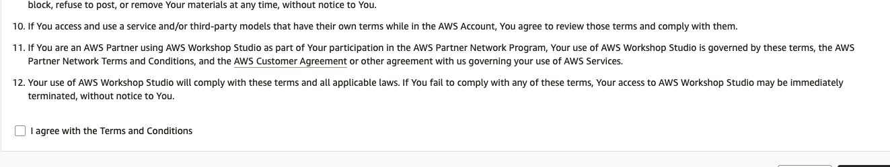
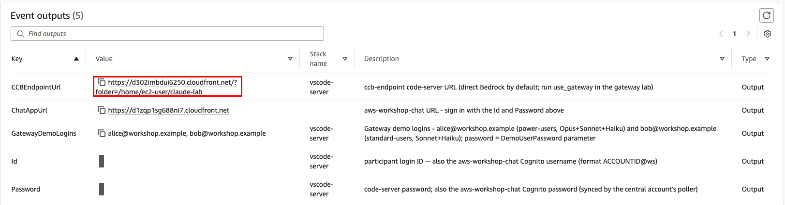
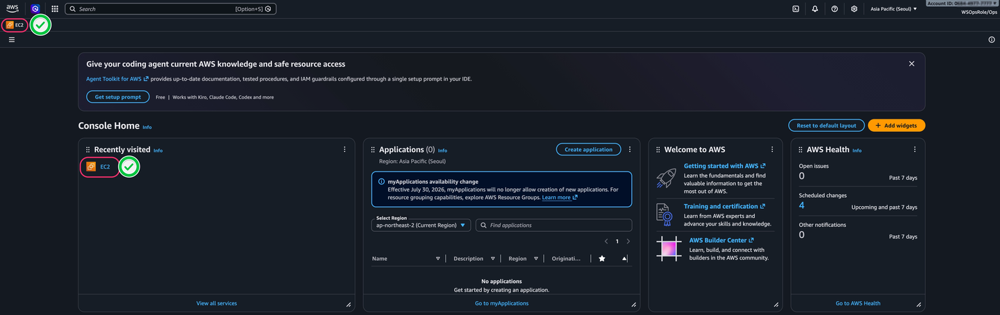
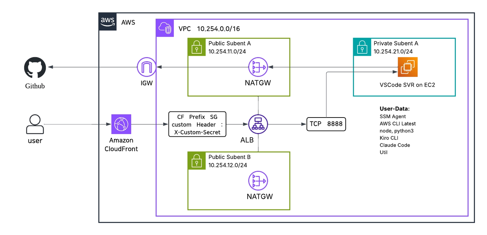

Preflight. 시작 전 확인
HANDS-ON LAB / PREFLIGHT CHECK
Chapter 1을 열기 전, 7분 프리플라이트
실습 환경이 켜져 있고 브라우저로 닿는지만 확인하면 준비 끝입니다. 아래 여섯 항목을 순서대로 체크하세요. 전부 초록이 되면 그대로 Chapter 1로 진입합니다.
소요 시간 7분 · 확인 항목 6개 · 환경 Workshop Studio + EC2 code-server + Claude Apps Gateway · Update 2026.11
CHECK 01 · 워크샵 접속 (1분)
배부받은 Workshop Studio 이벤트 링크로 접속해 AWS 콘솔이 열리는 것까지 확인합니다.
이벤트 접속 코드는 현장에서 배부됩니다. 접속 후 좌측 메뉴의 콘솔 열기로 AWS Management Console에 들어가면 이 계정이 오늘 하루 여러분의 실습 계정입니다. 리전은 us-east-1 (버지니아 북부)인지 우측 상단에서 확인하세요.
접속 코드를 입력하면 Review and join 화면이 나옵니다. 약관을 읽고 I agree with the Terms and Conditions를 체크한 뒤 Join event를 누르세요.

같은 이벤트 화면의 Event outputs 표에서 IDEUrl(브라우저에서 여는 실습 IDE 주소, code-server)과 Password(code-server 비밀번호)를 확인합니다. 아래 화면에서 가려진 값이 여러분 화면에서는 그대로 보입니다.

CHECKPOINT
CHECK 02 · 실습 인스턴스 확인 (1분)
EC2 콘솔에서 두 인스턴스가 실행 중인지 확인하세요. 여러분이 직접 쓰는 것은 ccb-endpoint 하나이고, 게이트웨이는 Ch2 Lab 1의 TASK 06과 Ch6에서만 거쳐 갑니다.
| 인스턴스 | 역할 | 서브넷 |
|---|---|---|
| ccb-endpoint | code-server + Claude Code. 기본은 인스턴스 역할로 Amazon Bedrock을 직접 호출 | 퍼블릭(CloudFront 경유 접속) |
…-apps-gateway |
Claude Apps Gateway. Cognito 로그인, 그룹별 모델 허용 목록, 일일 지출 한도 | 프라이빗(VPC 안에서만 접근) |
EC2에 직접 접속하지 않습니다
IDEUrl로 ccb-endpoint에 사전 배포된 VSCode Server(code-server)를 브라우저로 엽니다. SSH 키는 필요 없습니다.

CHECKPOINT
CHECK 03 · 접속 주소 확인 (1분)
Workshop Studio 팀 페이지의 Outputs 표에서 IDEUrl과 code-server 비밀번호를 복사합니다. 콘솔에서 다시 찾을 때는 CloudShell(콘솔 상단 터미널 아이콘)에서 아래를 실행합니다.
CloudShell, 전체 복사
aws cloudformation describe-stacks --region us-east-1 \
--query "Stacks[].Outputs[?OutputKey=='IDEUrl'].OutputValue" --output text이 블록이 하는 일 (붙여넣는 곳: AWS 콘솔의 CloudShell 터미널)
- CloudFormation은 실습 환경을 한 번에 만들어 준 AWS 서비스입니다.
describe-stacks는 그렇게 만든 묶음(스택)의 정보를 읽어 옵니다.--region us-east-1은 실습 리전을 지정합니다. 줄 끝의\는 다음 줄까지 한 명령이라는 표시입니다. --query는 결과 가운데IDEUrl값만 골라냅니다.--output text는 따옴표 없이 주소만 보여 줍니다. 나온 주소를 브라우저 새 탭에 붙여 넣으면 됩니다.
출력 예시
https://d3f4g87xxxxx.cloudfront.net/?folder=/home/ec2-user이 출력이 뜻하는 것 (붙여넣지 않음, 참고용)
- 여러분의 실습 IDE(code-server) 주소입니다. CloudFront는 바깥에서 실습 PC로 들어오는 AWS의 입구 서비스입니다. 주소의 앞부분은 사람마다 다릅니다.
- 아무것도 나오지 않으면 아래 문제가 있을 때 표의 첫 줄을 보세요.
CHECKPOINT
CHECK 04 · code-server 접속 (1분)
주소를 브라우저 새 탭에 붙여 넣으면 VS Code와 같은 화면이 열립니다. 상단 메뉴에서 Terminal, New Terminal로 통합 터미널을 하나 띄워 두세요. 오늘 모든 랩이 이 화면 하나에서 진행됩니다.

CHECKPOINT
CHECK 05 · Claude Code와 게이트웨이 확인 (1분)
Terminal, 전체 복사
claude --version
jq -r '.env.CLAUDE_CODE_USE_BEDROCK, .env.AWS_REGION' ~/.claude/settings.json
dig +short gateway.workshop.internal
curl -ks https://gateway.workshop.internal/.well-known/oauth-authorization-server | jq -r .issuer이 블록이 하는 일 (붙여넣는 곳: code-server 터미널)
- 설치된 Claude Code의 버전을 보여 줍니다. 버전이 나오면 터미널이
claude명령을 찾았다는 뜻입니다. jq는 JSON 파일에서 원하는 값만 꺼내는 도구입니다. 설정 파일에서 Bedrock 사용 여부와 리전을 읽습니다.1과us-east-1이 나오면 Claude Code가 Amazon Bedrock을 부릅니다.dig +short는 이름을 IP 주소로 바꿔 봅니다.gateway.workshop.internal은 VPC(실습 계정 안의 사설 네트워크)에서만 통하는 이름입니다. 주소가 나오면 게이트웨이를 찾은 것입니다.curl로 게이트웨이의 로그인 설정 문서를 받습니다.-s는 진행 표시를 숨기고,-k는 인증서 확인을 건너뜁니다. 마지막jq가 issuer(로그인을 발급하는 주소)만 꺼냅니다.
출력 예시
2.1.x (Claude Code)
1
us-east-1
10.240.x.x
https://d3f4g87xxxxx.cloudfront.net이 출력이 뜻하는 것 (붙여넣지 않음, 참고용)
- Claude Code 버전입니다.
x자리의 숫자는 달라도 됩니다. 1은 Bedrock 모드가 켜져 있다는 뜻입니다.us-east-1은 Bedrock을 부를 리전입니다.- 게이트웨이의 사설 IP 주소입니다. VPC 안에서만 닿는 주소라서
10.으로 시작합니다. - issuer 주소입니다. code-server와 같은 CloudFront 주소가 나오면 정상입니다.
버전, Bedrock 모드(1, us-east-1), 게이트웨이의 사설 IP와 issuer가 나오면 준비 완료입니다. issuer는 gateway.workshop.internal이 아니라 code-server와 같은 CloudFront 주소입니다. 로그인 화면(Cognito)이 브라우저에서 열려야 하므로 게이트웨이가 공개 주소를 issuer로 씁니다.
CHECKPOINT
CHECK 06 · 마이데이터 내려받기 (2분)
이번 실습은 마이데이터 시나리오 위에서 진행합니다. 고객자산 분석 담당자와 IT보안·플랫폼 담당자가 함께 쓰는 테스트 데이터 묶음(mydata-kit.zip)을 ccb-endpoint에 미리 내려받아 둡니다. raw/는 DLP 시연용 원본, pseudo/는 분석용 가명처리 데이터입니다.
테스트 데이터만 사용하세요
키트의 모든 식별자는 형식만 흉내 낸 가짜 값입니다. 실제 고객 데이터는 이 환경에 올리지 마세요.
aws s3 cp: 키트(zip)가 이 이벤트의 S3 버킷에서 EC2의 /tmp로 복사됩니다. 이 PC에 붙은 IAM 역할(인스턴스 역할)의 권한으로 받으므로 따로 로그인하지 않습니다. 2) unzip: zip이 ~/claude-lab/mydata 안에서 raw/ · pseudo/ · checkpoints/ 세 폴더로 펼쳐집니다. 3) sha256sum -c: 파일마다 지문을 확인합니다. 하나라도 다르면 FAILED로 멈춥니다. 4) chmod -R a-w: raw/와 pseudo/를 읽기 전용으로 잠급니다. 5) raw/는 DLP 시연용 가짜 원본(주민번호 등), pseudo/는 분석용 가명처리 데이터입니다.Terminal, 전체 복사
KIT=${WS_KIT:-s3://ws-assets-prod-iad-r-iad-ed304a55c2ca1aee/5b8d0649-9ad2-43a8-8ff5-10ce7bb42e6f/mydata-kit.zip}
mkdir -p ~/claude-lab/mydata
chmod -R u+w ~/claude-lab/mydata
aws s3 cp "$KIT" /tmp/mydata-kit.zip --only-show-errors \
&& unzip -qo /tmp/mydata-kit.zip -d ~/claude-lab/mydata \
&& cd ~/claude-lab/mydata \
&& sha256sum -c --quiet SHA256SUMS && echo "체크섬 OK" \
&& cat VERSION \
&& chmod -R a-w raw pseudo \
&& ls ~/claude-lab/mydata이 블록이 하는 일 (붙여넣는 곳: code-server 터미널)
KIT변수에 키트가 있는 S3 주소를 담습니다.WS_KIT는 실습 환경이 미리 넣어 둔 이 이벤트의 키트 주소입니다. 이 값이 비어 있을 때만:-뒤의 공개 사본 주소를 씁니다. 변수는 긴 값을 짧은 이름으로 다시 쓰려고 붙이는 이름표입니다.- 키트를 풀 폴더를 만듭니다.
-p는 폴더가 이미 있어도 오류 없이 넘어갑니다. 3행은 지난번에 잠근 폴더를 다시 쓸 수 있게 풉니다. 그래서 이 블록은 여러 번 실행해도 됩니다. - 이벤트 S3 버킷에서 zip을
/tmp로 복사합니다. 이 PC에 붙은 IAM 역할(인스턴스 역할)의 권한으로 받으므로 따로 로그인하지 않습니다.--only-show-errors는 문제가 있을 때만 메시지를 보여 줍니다. unzip -qo는 zip을 조용히 풀고, 같은 이름의 파일은 덮어씁니다. 그다음 키트 폴더로 이동합니다. 줄 앞의&&는 앞 명령이 성공했을 때만 다음 명령을 실행하라는 뜻입니다.sha256sum -c는 파일마다 지문(SHA-256 값)을 계산해SHA256SUMS목록과 비교합니다. 모두 같을 때만체크섬 OK를 출력합니다.cat VERSION은 키트 버전을 보여 줍니다.chmod -R a-w는raw와pseudo에서 쓰기 권한을 뺍니다. 읽기 전용이 되어 실수로 원본을 고칠 수 없습니다. 마지막ls로 폴더 목록을 확인합니다.
출력 예시
체크섬 OK
2026.11.2
checkpoints pseudo raw SHA256SUMS VERSION이 출력이 뜻하는 것 (붙여넣지 않음, 참고용)
- 모든 파일의 지문이 목록과 같다는 뜻입니다.
- 키트 버전입니다. 오늘 쓰는 키트는
2026.11.2입니다. - 키트 폴더의 내용입니다. 폴더 셋(
checkpoints,pseudo,raw)과 파일 둘(SHA256SUMS,VERSION)이 보이면 정상입니다.
체크섬 OK와 버전이 보이면 됩니다. 체크섬이 하나라도 맞지 않으면 FAILED 줄과 "did NOT match" 경고가 나오고 거기서 멈춥니다. 다운로드나 압축 해제가 실패해도 뒤 단계는 실행되지 않습니다. raw와 pseudo는 읽기 전용으로 잠가 두므로 실수로 원본을 고칠 일이 없습니다. 이 블록은 다시 실행해도 안전합니다. 버전이 2026.11.2가 아니면 echo $WS_KIT로 값이 있는지 확인하고 진행자에게 알립니다.
CHECKPOINT
문제가 있을 때
| 증상 | 원인 | 처방 |
|---|---|---|
| IDEUrl이 빈 값 | 리전 불일치 또는 배포 진행 중 | 리전 us-east-1 확인 후 재실행, 계속 비면 진행자에게 알림 |
| CloudFront 주소가 안 열림 | 배포 직후 전파 지연 | 2~3분 뒤 새로고침 |
| 터미널에 claude가 없음 | PATH 미적용 세션 | 터미널을 닫고 새로 열기, 지속되면 브라우저 새로고침 후 재접속 |
dig가 빈 값이거나 curl이 실패 |
게이트웨이 부팅 중 | 게이트웨이는 Ch2 Lab 1의 TASK 06과 Ch6에서만 씁니다. 그 전에 다시 확인하고, 그때도 실패하면 진행자에게 알림 |
마이데이터 내려받기가 실패하거나 FAILED 줄과 "did NOT match" 경고가 보임 |
네트워크 지연 또는 불완전한 다운로드 | 자격 증명은 필요하지 않습니다. 같은 블록을 한 번 더 실행하고, 그래도 실패하면 손을 들어 진행자에게 알림 |
이전 / 다음
- 이전: 실습 포털
- 다음: Ch1. Claude Code는 어떻게 동작하는가
원문: Claude Code Deep Dive Workshop · Preflight. 시작 전 확인 · 기준: 2026.07, 2026.11 환경에 맞게 수정